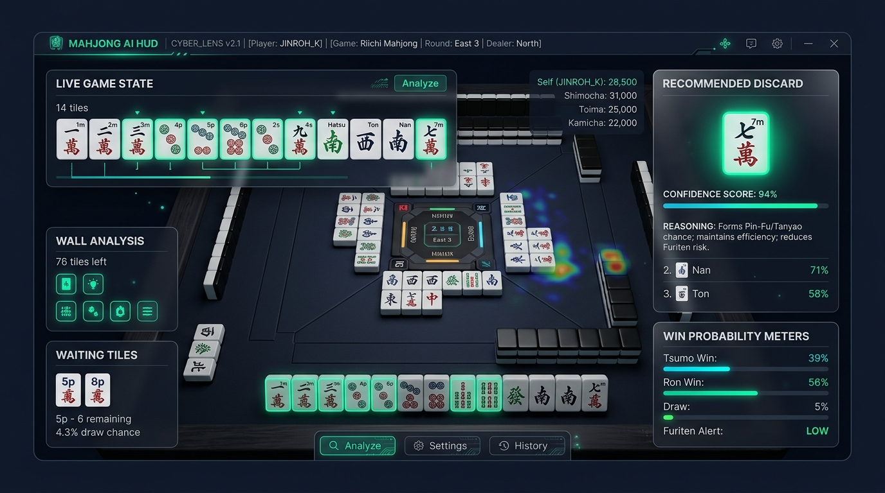
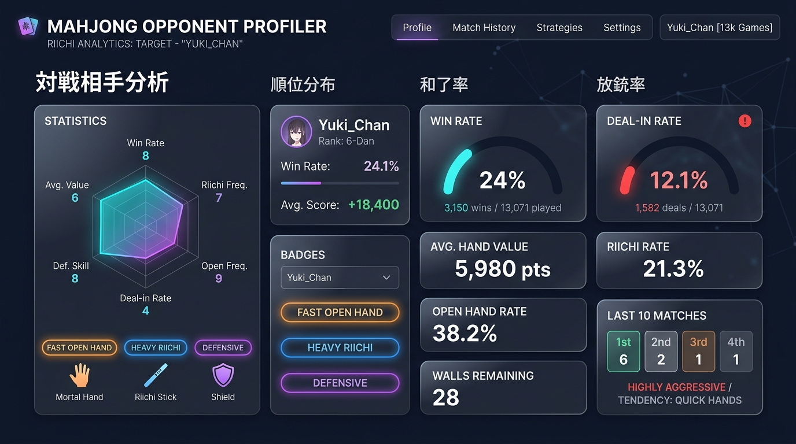

リアルタイム打牌推奨
× 相手の癖を突く エクスプロイトエンジン
雀魂（ブラウザ版）の通信パケットをリアルタイム解析し、最適な打牌候補・押し引き判断・対戦相手の放銃癖に合わせた戦術補正をHUDウィンドウに即時提示します。

Engine Architecture
実戦勝率を高めるための先進機能群
手牌認識・パケット解析・相手癖分析の3層パイプラインで打牌判断を強力にバックアップ。
リアルタイム打牌・押し引きAI
Chrome DevTools Protocol (CDP) 経由で雀魂の送受信パケットをミリ秒単位でデコード。局況・点差・他家のリーチや仕掛け速度に応じた最適な打牌と押し引き判断をリアルタイムにHUD表示します。
相手癖エクスプロイトエンジン
牌譜から同卓者の過去スタッツ（放銃率・平均打点・鳴き速度・ベタオリ傾向）を自動抽出。「放銃率が高い相手には強気リーチ」「役牌即鳴き相手には絞り重視」など、AIの重み付けを動的最適化。
安全・非干渉パケットスニッフ
ブラウザの描画や通信の改変・送信リクエストの偽造は一切行いません。Chromeの公式デバッグポートを通じて届いた受信パケットを受動的に読み取るだけのため、安定かつ安全に動作します。
対戦相手の思考と弱点を
データで完全可視化
雀魂の牌譜一覧画面で「詳細」をクリックするだけで、バックグラウンドのスニッファーが対戦相手3名の戦績とプレイスタイルを自動解析します。
客観的なスタッツ分析
放銃率、和了率、立直率、平均打点、副露率を正確に算出。
プレイスタイル・バッジ判定
「役牌速攻型」「鉄壁ベタオリ」「無筋押し多め」など直感的なタグを付与。
ワンクリック連携
「癖エクスプロイト」にチェックを入れるだけで、AIがその相手に刺さる打牌へと自動シフト。

System Specs
動作環境・前提条件
余計なソフトウェアの追加インストールは原則不要です。
※ アプリ内の「Chromeを起動」ボタンから自動起動できます。
Easy Setup
かんたん3ステップ導入ガイド
ダウンロードからアシスト開始まで約1分で完了します。
ZIPファイルをダウンロード
配布ZIPを展開し、任意のフォルダに保存します。フォルダ内の MahjongAI_Assistant.exe をダブルクリックして起動します。
「Chromeを起動」をクリック
HUD画面上部の「🌐 Chromeを起動」ボタンをクリックします。パケットスニッファー専用のデバッグポート（9222）が有効な状態でChromeが自動起動します。
雀魂に入り「アシスト開始」
起動したChromeで雀魂にログインし、対局に入ります。アプリの「▶ アシスト開始」を押すと、リアルタイム打牌推奨・点況解析がスタートします。
Support & FAQ
よくある質問・トラブルシューティング
起動や連携でつまずいた際はこちらをご確認ください。
Q 「WindowsによってPCが保護されました」と青い警告画面が出る場合は？
画面内の「詳細情報」という下線テキストをクリックすると、右下に「実行」ボタンが現れますので、そのまま「実行」をクリックしてください。
Q 「ブラウザに接続できません」または動かない場合は？
一度タスクバーやタスクマネージャーからChromeを完全に終了させてから、アプリ内の「🌐 Chromeを起動」ボタンを押してください。
Q 対戦相手プロファイラーにデータが反映されない・取り込めない場合は？
再生画面を開く必要はなく、「詳細」を押した瞬間に流れるパケットを自動検知して取り込みます（最大3戦分で自動分析ウィンドウが開きます）。
Q 手牌がHUDに反映されない場合の対処法は？
Windowsの「ディスプレイ設定」にて拡大縮小を100%にし、雀魂ウィンドウを最前面に表示した状態で局を開始してください。
準備ができたら、今すぐ始めよう
ダウンロードしたZIPを展開してEXEを実行するだけ。快適な牌譜分析と打牌アシストをあなたの対局へ。